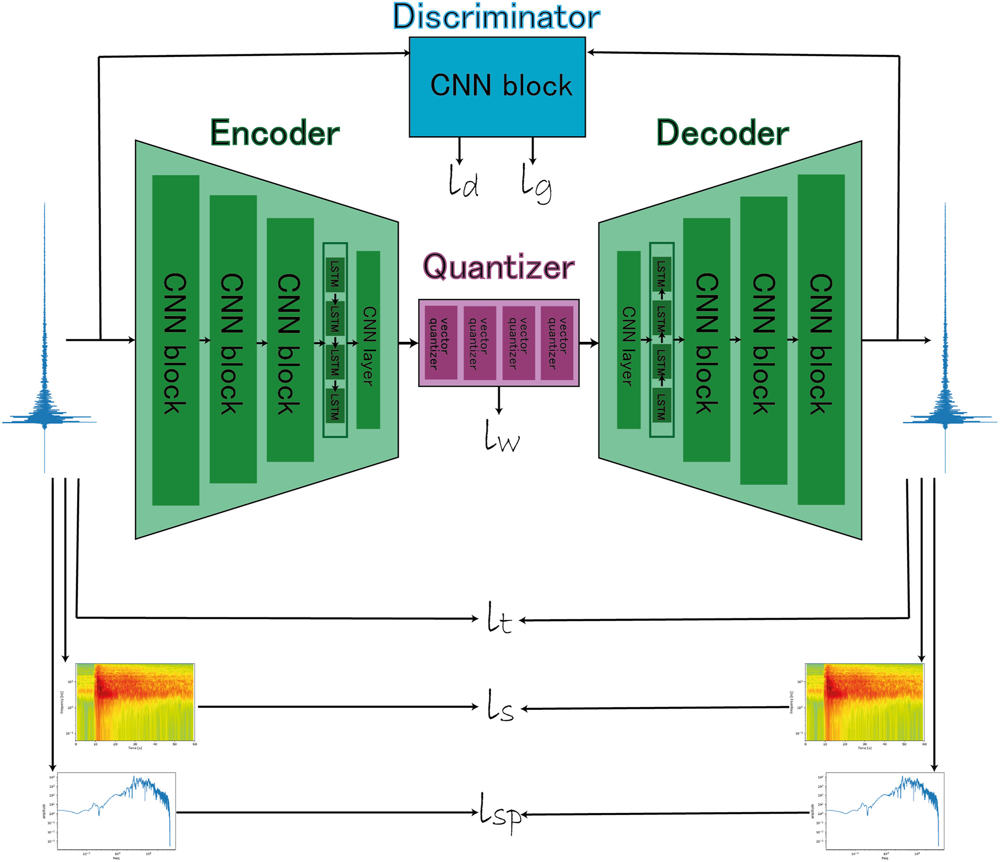
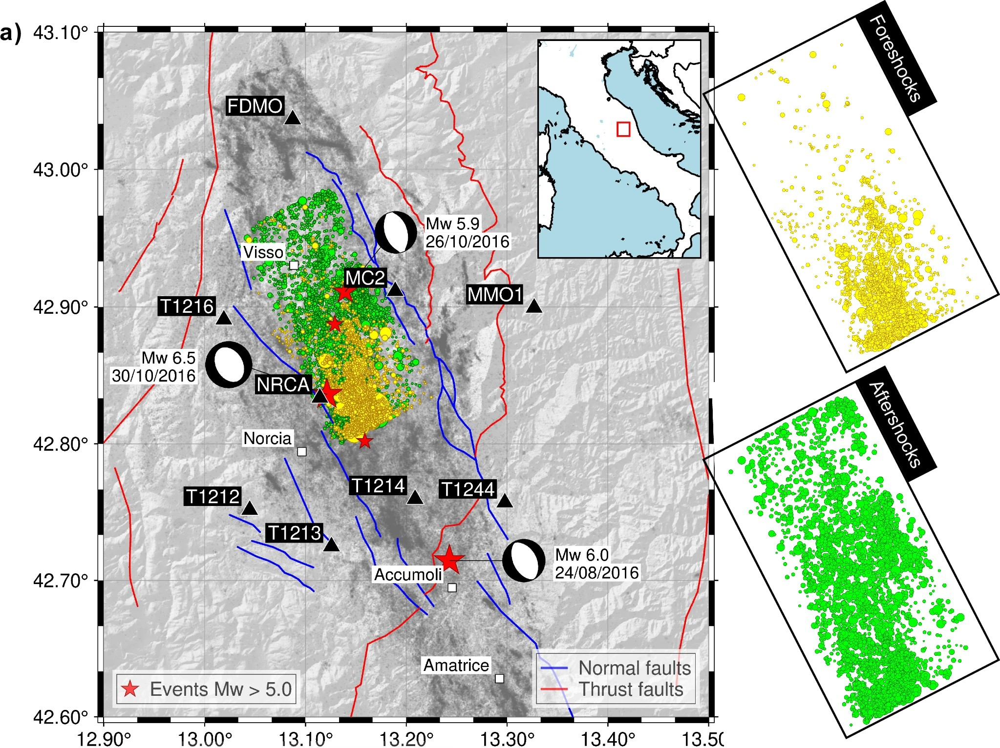
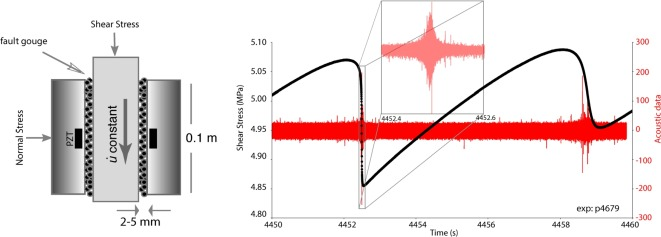
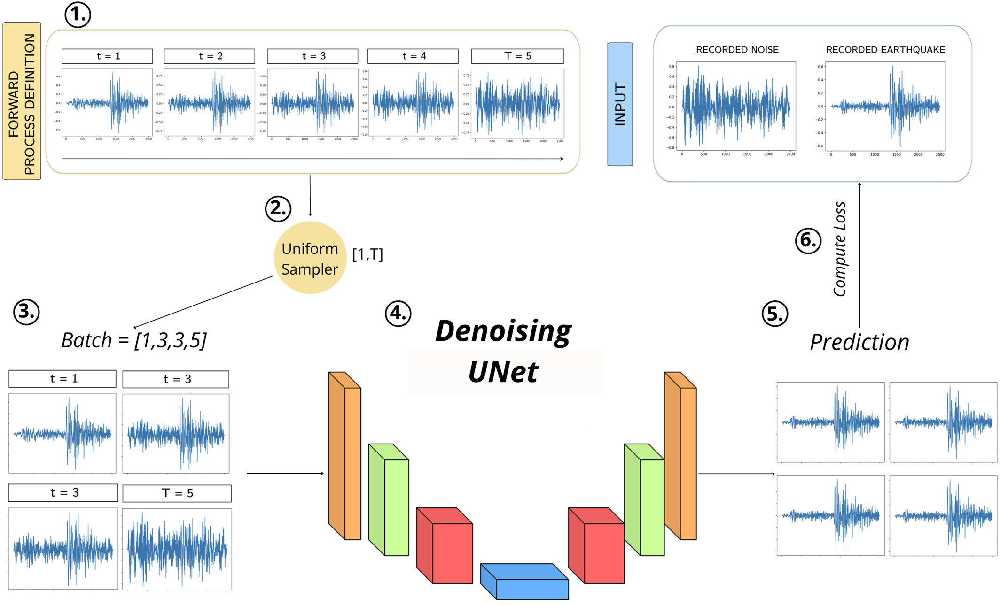

Here are some representative projects which I have worked on. A complete list of my publications can be found on Google Scholar, Orcid, and GitHub. Links are below.

Laurenti, L., Johnson, C. W., Trappolini, D., Tinti, E., Galasso, F., & Marone, C. (2026), Journal of Geophysical Research: Machine Learning and Computation, 3, e2025JH000787
Explores how audio compression autoencoders can be adapted to seismic waveforms, with the goal of learning scalable representations that support future foundation models for seismology.
Full Paper
Laurenti, L., Paoletti, G., Tinti, E., Galasso, F., Collettini, C., & Marone, C. (2024). Nature Communications, 15, 10025.
Uses deep learning to study how fault properties change through the seismic cycle, connecting waveform patterns to evolving physical processes in fault zones, to identify foreshocks and aftershocks.
Full Paper
Laurenti, L., Tinti, E., Galasso, F., Franco, L., & Marone, C. (2022). Earth and Planetary Science Letters, 598, 117825.
Applies deep neural networks to laboratory earthquake data to predict and forecast stress evolution in fault zones and time to failure, linking machine learning with earthquake physics.
Full Paper
Trappolini, D., Laurenti, L., Poggiali, G., Tinti, E., Galasso, F., Michelini, A., & Marone, C. (2024). Journal of Geophysical Research: Machine Learning and Computation, 1, e2024JH000179.
Applies cold diffusion models to seismic denoising, showing how generative modeling can help recover cleaner waveforms from noisy observations.
Full Paper